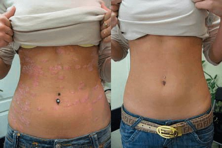
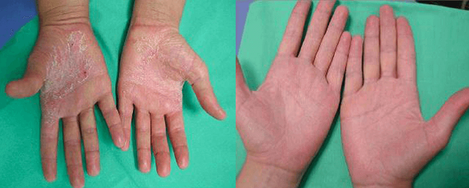
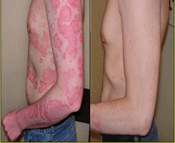

आम तौर पर यह माना जाता है बिना मंहगी दवाओं और क्रीमों के बिना सोरायसिस का इलाज संभव नहीं
है। हालांकि यह सोच सन 2000 के बाद से थोड़ी पुरानी मानी जाने लगी है, कई लोग आज भी यही मानते हैं
कि सोरायसिस और खुजली से छुटकारा पाने के लिए व्यक्ति को लंबे समय तक चलने वाले महंगे अस्पताल के इलाज
की ही जरूरत होती है।
लेकिन, मेडिकल साइंस विकास करता रहता है, खासकर डर्मैटोलॉजी ( त्वचा, नाखून, बाल और इसकी
बीमारियाँ ) सोरायसिस से लड़ने के लिए हाल ही के कुछ सालों में एक बड़ी खोज उभरी है जो है क्रीम, ,जिससे 1 माह में ही असरदार इलाज मिल सकता है।
नियमित उपयोग से, से निम्नलिखित लाभ मिलते हैं:
1. शरीर की क्षतिग्रस्त हो चुकी कोशिकाओं को और बढ़ने से रोकती है।
2. दाह और खुजली को नियंत्रित करती है।
3. इस बीमारी से संबन्धित सभी असुविधाओं से राहत देती अहि।
"मेडिकल बुलेटिन" के संपादकों ने 8 अनुभवी त्वचा रोग विशेषज्ञों का
इंटरव्यू लिया। सभी ने यही रिपोर्ट किया कि वे अपने सभी मरीजों को की ही सलाह
देते हैं।
|
डॉ. सुधीर रेड्डी, एमडी,
डर्मेटोलॉजिस्ट (30 साल से ज़्यादा का अनुभव)
कई मरीजों ने स्पेशल इलाज कराया (और दुर्भाग्य से उन्हें कोई फायदा नहीं हुआ)। यह आमतौर पर
सोरायसिस की तीसरी और चौथी स्टेज पर होता है। लेकिन इस क्रीम ने इस स्थिति में भी असर किया
है। ने इस स्थिति में भी असर किया है।
यह असरदार प्रोडक्ट समस्या शुरू होने की स्टेज पर और बीमारी बिगड़ जाने के बाद भी असर करता
है जब इसे "बिना दवाओं और खास इलाज के" ठीक करना असंभव प्रतीत होता है। अब मैं मरीजों को
दवाएं तभी लिखता हूं जब केस जटिल हो चुका हो और हर किसी को सिर्फ यही क्रीम लगाने को कहता
हूं।
बेशक घर पर ही सोरायसिस को ठीक करने और उसकी रोकथाम करने
का सबसे बढ़िया प्रोडक्ट है।
देखिए
ये रहे इस क्रीम से 1 हफ्ते तक इलाज करे के बाद के नतीजे: |

|
डॉ दीपिका, एमडी फ्लेबोलॉजी
(11 साल से अधिक का अनुभव)
क्रीम का सबसे बड़ा लाभ इसके घटक हैं। इसमें ऑर्गेनिक घटकों का एक
ऐसा नायाब मिश्रण है जो 1 हफ्ते के नियमित उपयोग से ही मरीज की स्थिति में अच्छा सुधार ले
आता है। 1.5 महीने के नतीजे तो बहुत ही बढ़िया होते हैं।
मैं यह भी बताना चाहूँगी कि इसमें अलोवेरा होता है , जो सेबसियस ग्रंथियों को
शक्तिशाली तरीके से नियंत्रित करता है और एक बहुत बढ़िया मॉइस्चराइज़र है। इस क्रीम का असर
बहुत ही बढ़िया होता है । मैं मानती हूँ कि एक
क्रांतिकारी उपाय है जिसने सोरायसिस के इलाज के नजरिए को पूरी तरह बदल कर रख दिया है और आज
मरीजों को महंगे और दर्द भरे तरीके नहीं अपनाने पड़ते। इसे हर उम्र में इस्तेमाल किया जा
सकता है! |

|
डॉ. अरुण जोशी, एमडी,
डर्मेटोलॉजिस्ट, एक जाने-माने डर्मैटोलॉजी एक्सपर्ट (30 साल से ज़्यादा का अनुभव)
सोरायसिस के इलाज के लिए मैं अपने मरीजों को इस्तेमाल करने
की सलाह जरूर दूँगा। ये तीसरी और चौथी स्टेज में भी आसानी से समस्या का इलाज कर देती है
क्योंकि ये लक्षणों की जगह जड़ से ठीक करती है। |
मैं इस क्रीम को रोकथाम के लिए भी उपयोग की सलाह दूँगा ताकि आगे चलकर आपको कभी सोरायसिस न हो ।
डॉ उपाध्याय के अनुभव से, ऐसे भी केस देखे गए हैं जब ने सोरायसिस के बहुत
बिगड़ चुके केस भी ठीक कर दिए। ये रहा एक उदाहरण:

क्रीम के इलाज के एक ही कोर्स से सोरायसिस के खराब लक्षणों से मुक्ति पाएँ।
यह बेहतर होता है कि आप को सप्लायर की
ऑफिशियल वेबसाइट से ही ऑर्डर करें ताकि आपको नकली प्रोडक्ट न मिले।
सोरायसिस का इलाज करने के लिए एक आधुनिक प्रोडक्ट पाने का यही आपका अवसर
है:

टिप्पणियाँ (47/47)